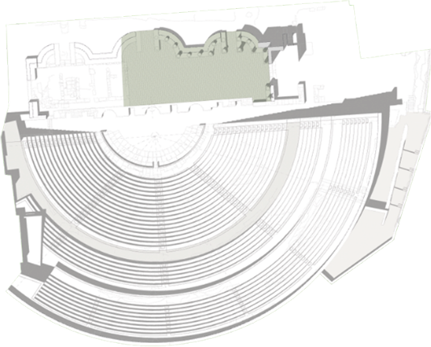
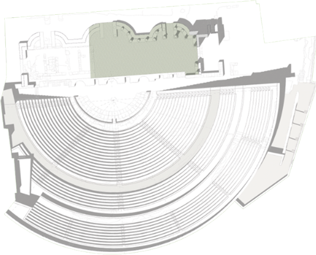

Inclined wing dish decorated in cobalt blue over white. The ornamentation is composed of a central theme with head of winged profile on plant elements, which depart from the center and are distributed throughout the surface in the form of scrolls.
It constitutes a formal and decorative evolution of the Catalan blau work of the mid-seventeenth century, influenced by the Italian productions of Savona. The decoration occupies the entire surface of the plate, and the representation of volume and perspective is tried through the use of different shades of blue.

Inclined wing dish decorated in cobalt blue over white. The ornamentation is composed of a central theme with head of winged profile on plant elements, which depart from the center and are distributed throughout the surface in the form of scrolls.
It constitutes a formal and decorative evolution of the Catalan blau work of the mid-seventeenth century, influenced by the Italian productions of Savona. The decoration occupies the entire surface of the plate, and the representation of volume and perspective is tried through the use of different shades of blue.


The sculpture, found a few years ago during the excavation of the curia of the forum of Carthago Nova, is bigger than life-size, was carved from a single block of white marble from Carrara. It depicts a larger than normal male figure dressed in a tunic with a toga raised over his head.
The attention of the sculptor was focused on the clothing, trying to depict the way of wearing a toga, with a first twist around the waist at the balteus and then at the sinus on the chest. His feet are wrapped by the alutae, the calcei patricii, typical footwear of persons of high social standing. Only the front of the piece is carved and it must have been placed in an alcove, since the back of the sculpture is flat and barely outlined.
The image reproduced by the sculpture is very similar to that of Augustus from the Via Labicana, which was often used, particularly at the start of the Imperial period, to represent the Emperor as the Pontifex Maximus.


Only glazed in the centre, with anthromorphic decoration in cobalt blue on a white background: bust of a female head in profile and schematic plant motifs. During the middle of the 14th century, the Muslims mudejars in Valencia developed an innovative technique for the application of glazes which allowed the start of mass production of high quality china for everyday use.
This piece belongs to an early production, showing influence of the green and manganese china developed in the same workshops some decades before.


Relief of extraordinary quality, cut from Luni marble, which represents a female figure with a naked torso sitting on a rock.
The head, both arms, which would have been raised upwards, and the left foot are completely missing.
The cloak which covers the back is blown open by the wind, creating a succession of folds both sides of the breasts, and is retained by a belt around the waist.
The theme which is represented here centres on the episode of the encounter between the vestal Rea Silvia, daughter of Eneas and the God Mars, fruit of which would lead to the births of Romulo and Remo. The iconography which describes the aforementioned episode (Ovidio, Fasti, III, 11-45) was developed in the Augustan Age and reproduced in temples and other prestigious monuments, in line with the policy of revival of the old myths about the founding of Rome.


The horn, made of green glass, was decorated through the application of hot strands of white glass, which spiral around the outer surface of the horn and form the upper motif of spirals.
These characteristics suggest it derives from traditions from the Germanic region, although its presence in Italy and now in Cartagena can be interpreted as the result of emigration by the Lombards and the adaptation of local craftsmen to their demand.


Together with North African amphora, oriental amphora also arrived in the city during the Byzantine era. In this case, it is a medium-sized container with a pointed, ridged body, finished by a small cylindrical foot and base. It probably held the famous Gaza wine, as mentioned in numerous sources, such as by Isidoro de Sevilla (Etym. 20,3,7).


Rings were usually worn as adornments and in Christian ceremonies. Our example contains the inscription FELIX, made by an awl.


Fine pottery plate with stamp decoration in black depicting hunting scenes in the centre and around the border. The base has two stamps from the Fábrica de La Amistad (Cartagena).
Created by Tomás Valarino in 1842, the Fábrica de la Amistad used new techniques to make industrial china that were developed at the end of the 18th century, used to produce a series of dinner plates using moulds and decorated using stamps made from original designs. It closed down in 1893.


Part of the first level of the stage, they have similar features in the double crown eight Acanthus leaves, each of which covers lower half of the capital. Between the leaves of the second crown sprout curved tendrils which coil and twist at the ends.
The abacus is divided into the ovolo and the cavete and the first displays a kyma of eggs separated by spear tips, while on the smooth cavete is the flower of an Araceae. Carved out of marble from Luni (Carrara), they are a replica of styles found in the Augustine Forum in Rome.


Votive altar of white Luni (Carrara) marble. Only the top third part remains conserved, which includes the epigraph area, cymatium and the lateral pulvini decorated with interwoven leaves and small Gorgon heads.
The altar forms part of the ideological and iconographic program developed in the Cartagena theatre in order to influence the public promotion of Augustus's young heirs.
The inscription includes the political career cursus honorum of the youth: in the year 6 B.C. he was appointed pontifex (pontiff) and elected for the consulate in 5 B.C., carrying out magistracy functions in the year 1 A.D. and being appointed as imperator (emperor) in the year 3.
The dedicator, Lucius Iunius Paetus, the same one who also appears in the Fortuna altar, was a distinguished representative of the local elite who also is likely to have participated in the financing of the construction of the theatre.
C(aii) Caesaris Augusti f(ilii)
pontif(icis) co(n)s(ulis) design(nati)
principis iuuentutis.
Dedicated (with honour) to Caius Caesar, son of Augustus, pontiff, elected consul, prince of youth, Lucius Iunius Paetus, son of Lucius, grandson of Titus, dedicated (this altar).


Part of the clothing remnants, this laminated cuirass is characteristic of the Byzantine era, whose closest comparison can be found in the Crypta Balbi in Rome, also dating from the 7th century A.D.
The cuirass made up of a series of iron sheets, is currently the only documented example in the Iberian Peninsula.


These pieces have been unaltered over the centuries thanks to their form, which is identical to modern-day dice. Each face displays a number through a number of circular dots, with the total of the opposite faces always totalling seven.
Their use in table games and, above all, betting of Money has been widely documented in written sources, as well as the laws intended to regulate and prevent such use. Top lay usually required three die, with the winning throw a triple six.


The eagle, emblem of Jupiter, is depicted here as a majestic form, locking its powerful talons on a rocky peak, facing forwards with wings spread out and head tilted towards the left. It is accompanied by a female entourage interpreted as the Muses, which makes a clear reference to Apollo and the scenic arts.
The owl, emblem of the goddess Minerva, is represented with its head facing forwards and its body, with wings tucked in at the sides, turned towards the right. The female group which accompanies it can be represented as the Gracias (Graces) or the Charites. Their significance in the theatre could be associated with the idea of prosperity for the city.
The peacock, symbol of Juno, advances to the right while turning its head towards the other side, hence bestowing the scene with more volume and movement.
The exquisite detail in the depiction of the tail feathers which fall softly to the ground stands out in the carving of the figure. Likewise it is also accompanied by a group of three young girls who are interpreted as the Hours, which could, in the case of our theatre, signify an implicit acknowledgment of the Pax Augusta (Roman peace).


Bronze signet ring with rectangular stamp containing the engraving L(uci) Porci(ii) Valeriani. Los Porcii which is widely thought to originate from the coast of the Tarraconensis region during the 1st and 2nd centuries A.D. In Cartagena, the only person to have one was the Monetal Triumval L(ucius) Porc(ius) Capit(o), who was IIvir quinquennal during the rule of Augustus.
Among the uses of this type of seal was the validation and guaranteeing of public and private document as well a mark of distinction applied to food or manufactured products.


Round table jug decorated with sgraffiti. Through using the sgraffiting technique ornamental patterns are applied with an awl onto the painted surface of the pot before firing, which highlights the bright colour of the glaze.
On the opposite faces of the jug there are four circular motifs, around a central circular design containing a plant motif. Many of these jugs were meant for a specific religious function, or one related to popular beliefs, or for family or domestic use. The aim of the decoration is to give it a special feel.


From the Augustan Age, the theatre, along with the forum, transformed itself into a privileged space for the self-advocacy of the local elite and the proclamation of the slogans and messages originating from the Imperial House.
The commemorative lintels of the Cartagena theatre dedicated to Lucius and Caius Caesar constitute a monolithic representation of Augustus's plans for his successors.
Caius and Lucius were sons of M. Vipsanio Agrippa, patronus of Carthago Nova and Julia la Mayor, and consequently grandsons of the emperor, very soon being adopted by Augustus who regarded them as his future heirs.
The two youths became the objects of an early ennoblement after the death of their father in the year 12 B.C., consequently converting them into Augustus¿s actual successors in the year 6 B.C.


Lamp with a green glass cover. It is decorated with a mythological scene, from which the right hand figure stands out: a young boy wearing a chlamys (Greek-style cloak) with a caduceus and his head covered by a petasus with an image of Mercury depicted on it.


Sculpted in Carrara marble, the God appears sitting on a rocky promontory, with a naked torso and thighs covered by a short mantle. With his left harm he held a zither, which has not been conserved, while he holds a plectrum in his right hand.
This divine protector of the scenic arts is also closely related to Augustus's religious and political interests, and became his protector, especially after the victory at Actium in 31 B.C.


The museum tour of this corridor, where urban evolution of the Roman Theater, from XXI century to the I Century ,is illustrated from the artifacts recovered during the excavation, drawings, photographs and audiovisual history.
The history begins from the Barrio de Pescadores (eighteenth to twentieth centuries), following the Arrabal Viejo (XVI-XVII centuries), the Medina of Qartayanna to Halfa, the harbor district of Byzantine era, destroyed by Suintila (c. 625), and transformation market theater in mid-V century AD, to directly enter the first large exhibition hall.
Exposing plates, jars, pots, pans and various everyday objects recovered in successive excavation campaigns of sensing the murmur of life of the inhabitants of a neighborhood that throughout its history has always been urban area, with its moments flowering and decay.
At the end of the corridor and through a virtual recreation visitor comes to understand how this succession of neighborhoods throughout history erased any reference of the Roman theater prior to excavation.

This room of the museum is dedicated to the construction of the Roman theater of Cartagena in the 1st century.
In it we find several original pieces recovered from the remains of the Roman theater and that allow us to understand, with the help of a scale model of the theater and multimedia presentations, how the architecture of the theatrical building was configured.
Along with the model of the theater, an information panel and a representation show us how it was built following the precepts of Marco Vitruvio, architect of Julius Caesar in the first century B.C.
The hall is presided over by a large sculpture by Augusto Togado, coming from the curia of Cartagena as a sponsor of the urbanization works of the city of Carthago Nova
.
In this room are also exposed stems, capitals carved in sandstone, Corinthian capitals and fragments of cornices made with Carrara marble, as well as tracts of pink travertine from the town of Mula.

This room will bring the visitor to the knowledge of the functions of the theater in antiquity, as well as its recreational function the theater building is the ideal framework for political and religious propaganda of Augustus himself, personified in the Roman Theater in Cartagena for the dedication of lintels entering the building to the two young princes, Gaius and Lucius Caesars grandchildren of Augustus and his virtual heirs, who also had to participate in its financing, and probably in choosing your ornamental program.
A decorative program full of ideological messages among which the introduction of cults to the traditional deities of the Roman state through three altars where the symbols of the Capitoline Triad, presiding over the central parts of the room are represented.
Emblems of Jupiter, Juno and Minerva, an eagle with outstretched wings, peacock profile and an owl, take on a special role because of its size and careful execution.
Complete the composition on each altar a procession of three young girls in a walking position or dance. For the quality of its reliefs are considered to be the work of any of the neoáticos workshops set up in Rome in the late first century B.C.
Other messages may discern in the room with the contemplation of the sculpture of Apollo I Citaredo, protector god of the performing arts, but also revered by Augustus, become their protector god after the victory of Actium in 31 BC, or the relief of a reclining female figure we have interpreted as Rea Silvia, whose iconography was widely promoted by the emperor in his monumental architecture.
As in other Roman cities also they participated in funding members of the most prominent families of the city, among which include L. Iunius Paetus, who dedicated an altar in honor of Gaius Caesar and another Fortune of the emperor, and Postumii , who dedicated a pedestal Lucius Caesar.
The contemplation of these pieces allows visitors to understand the keys of the patronage and political promotion in ancient times, whose contents are expanded in the interactive room.


Mvseo connection with the monument is done through an underground corridor beneath the church of Santa Maria.
In its route we have the opportunity to know the evolution of the temple by the vision of its foundation, which from the thirteenth to the nineteenth mark the course.
In the itinerary you can also see a section of the wall of Islamic medina, and additions that are made after the Christian conquest of the city, structures that combine with the remains of a pre - Roman housing construction theater, show a well - planned urban linked to an area of residential character that extended along the northern slope of Cerro de la Concepción, from the late second century BC, and was written off by the construction of the Roman Theater.
Once the corridor ended, a metal walkway attached to the outer face of the Church leads us to the theater; since she can see the last major expansion of the religious building, carried out by large walls that rest and break in some cases the remains of the building shows; in numerous architectural construction and construction elements used in Roman times.
During the brief and intense tour of the basement of the church, its foundations become a direct witness to the understanding of a part of the history of the temple and the city itself.

At the end of the tour you enter the Roman Theater.
Output leads to a corridor walkway linking directly with the circulation corridor separating ima and media cavea.
From this point you have a complete view of the theater, whose geometry is highlighted by the return of the closing wall, and landscape background Park Cornice. From here the route begins inside the building through the halls of the cavea, and radial stairs to tour the monument.
Archaeological work since 1990 until now have allowed know and understand the exceptional architecture and meaning of the building shows. Its location in one of the highest hills of the city and next to the port would produce a first image of magnificence all who came to the city by sea.
Available on the slope of hill, it facilitated the construction of the cavea, which appears in its central part excavated in the rock of the mountain, while the lateral flanks are supported by vaulted galleries.
The cavea, with a capacity for 7,000 spectators, is divided into three horizontal sectors (moeniana), again divided by five radial stairways in the ima and seven in the media and summa.
Front of the stands is the scenic facade , it can be restored from the analysis of the imprints and the architectural elements, with a hinged floor three trend curvilinear, and an elevation of 16 meters high with two orders in the stands that the combination of the reddish tones of the columns of white capitals and bases, and gray podium create an evocative color set.
The restoration works have followed basic criteria aimed primarily at a better understanding of the monument, so it has been necessary to replace with new work those remnants of the bleachers that had completely disappeared without altering at any time its appearance, while it has consolidated and made visible all original work that had been preserved.
Finally, it has been a replenishment of the entrances to ensure the visit and tour inside the building and been partially restored the scenic facade integrating original elements.
After completing the visit to the monument, the output is performed by Western aditus that connects directly with the Plaza de la Condesa Peralta.


 

The cavea with a capacity for 7,000 spectators, is divided into three horizontal sectors (moeniana), again divided by five radial stairways in the ima, and seven in the media and summa cavea. The main entrances were made public through two side aisles (aditus) for which two separate entrance doors lintels with dedications to Lucio Caesar, east, and probably Caio Caesar were located on the west. Both dedications, together with the consul mention designatus in the cursus of Caio one of the altars found in the pit of hyposcaenium has allowed realize the date of construction or opening of the building between 5 and 1 a. C.
From these side corridors also agreed to the orchestra , semicircular space in front of the stage or proscenium which develops with a length of 43.60 m, on which actors were involved with the choir, while the orchestra itself they placed in three rows seats of honor (proedria) reserved to the authorities. The stage was topped by a hinged front by exedras under which runs a vaulted collector intended for disposal of rainwater, three sinks in the central part, which communicates with two other channels at the ends of the circulation passage, at the foot of the ima cavea.
Front of the stands the stands frons scaena or scenic facade , can be restored from the analysis of the imprints and the architectural elements, with a hinged floor three trend curvilinear, and an elevation of 14, 60 m high with two orders, where the combination of the reddish tones of columns, capitals and white bases, and gray of the podium and entablamento cause an evocative color set.
On the back develops so aterrazada the porticus post scaenam articulated with a double portico delimited by a powerful facing of sandstone blocks serving perimeter wall and porch where exedras semicircular paths 12 m are opened. diameter.
The bases, cornices and especially capitals, translate the size of the building, and with a rich ornamental program become the theater of Cartagena in a magnificent example of public and monumental architecture Augustan era.
With the creation of the Roman province of Carthaginian capital in the city in the third century, the city experienced a certain population and economic recovery: taking advantage of materials from it, a columned market was built whose main square, in semicircular form fossilized the structure of the orchestra. This market was built taking advantage of theater materials. The capitals, columns, even sculptures were part of the walls and foundations of the new structures. For this reason, up to 60% of the original material with which the theater was built is in its original place, although displaced.


{kind=link}
{kind=link}
{kind=link}
{kind=link}